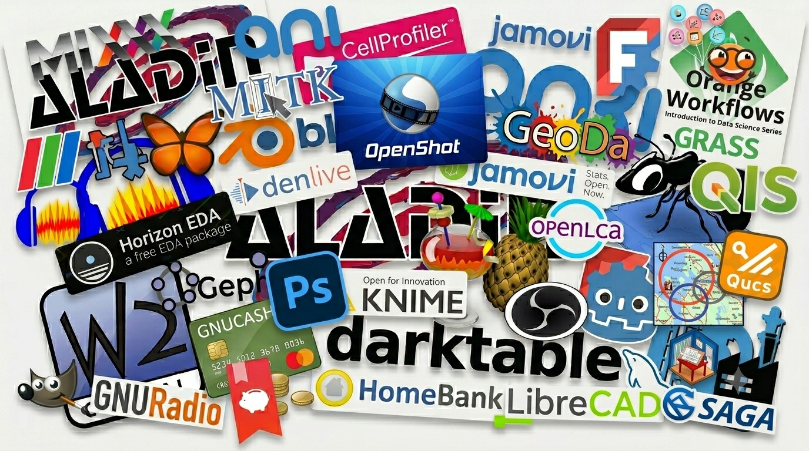

xDailyBench: A Rubric-Grounded Benchmark for Evaluating LLMs on Real-World Daily-Life Tasks
1ByteDance Seed, 2Peking University
- xDailyBench is a benchmark designed to evaluate whether large language models can handle the complex, open-ended requests that real users encounter in daily life — rather than standardized exams or narrow domain tasks.
- It comprises 248 expert-curated tasks across 56 scenario categories spanning personal life, white-collar work, and learning & research, each paired with a fine-grained scoring rubric (mean 13.3 criteria per task).
- A two-level capability taxonomy (5 L1 × 9 L2 dimensions) annotates every criterion, enabling multi-dimensional diagnostic profiling of model strengths and weaknesses without reliance on reference answers.
- Evaluating nine frontier models, the best (GPT-5.5) reaches only a 0.730 criterion-level pass rate and all models fall below 0.50 on the most demanding tier — losses concentrate in grounding and reasoning, not presentation.